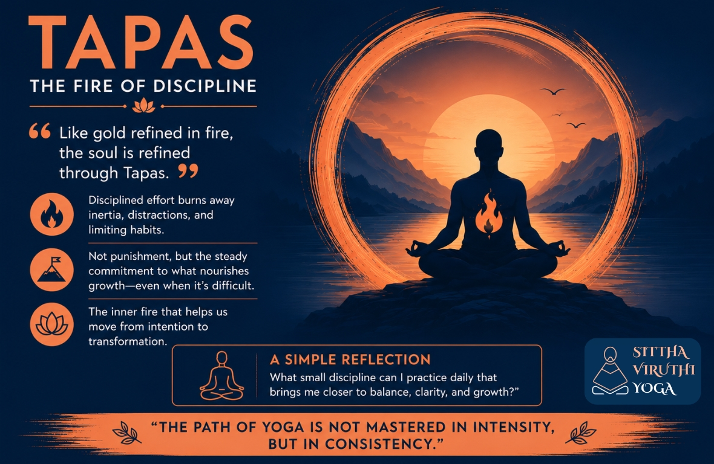

Tapas – The Fire of Discipline | Meaning, Practice & Inner Transformation

Tapas – The Fire of Discipline
Like gold refined in fire, the soul is refined through Tapas.In Yoga Sutras, Patanjali describes Tapas as the practice of discipline and dedicated effort. It is one of the Niyamas — personal observances that guide inner growth and self-awareness
Tapas – Discipline that TransformsThe Sanskrit word Tapas comes from the root “tap,” meaning to heat, burn, or purify. In yoga philosophy, Tapas refers to disciplined effort that burns away inertia, distractions, and limiting habits.
Tapas is not punishment or harsh control. It is the steady willingness to stay committed to what nourishes growth — even when it feels difficult. It is the inner fire that helps us move from intention to transformation.
Understanding Tapas in Daily Life
Discipline is often misunderstood as restriction. In reality, Tapas creates freedom. When we practice discipline consistently, the mind becomes clearer, the body stronger, and our actions more purposeful. Small conscious efforts repeated daily gradually shape our character.
Tapas can be practiced in simple ways:- Waking up early for meditation or exercise
- Maintaining consistency in yoga practice
- Choosing healthy habits over temporary comfort
- Speaking with awareness and kindness
- Staying committed to personal growth despite challenges
The essence of Tapas lies in consistency, sincerity, and conscious effort.
Tapas Beyond Yoga – Simple Examples
The MusicianA musician practices scales every day, even when there is no immediate reward. Over time, discipline becomes mastery.
The AthleteAn athlete trains regularly, follows routines, and stays focused despite setbacks. Their strength is built through sustained effort.
The StudentA student who studies a little every day develops confidence and clarity, rather than relying on last-minute effort.
Nature ItselfA river shapes stone not through force, but through continuous flow. Discipline works in the same way — gentle, patient, and transformative.
The Inner Purpose of Tapas
Tapas teaches us to move beyond laziness, distraction, and self-doubt. It strengthens willpower and builds resilience. More importantly, it helps align our actions with our deeper values. True discipline is not about perfection. It is about showing up with commitment, again and again. Through Tapas, we learn that transformation does not happen overnight. It happens through conscious daily practice.
A Simple Reflection
What small discipline can I practice daily that brings me closer to balance, clarity, and growth?That question itself is the beginning of Tapas. “The path of yoga is not mastered in intensity, but in consistency.”